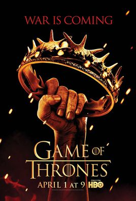
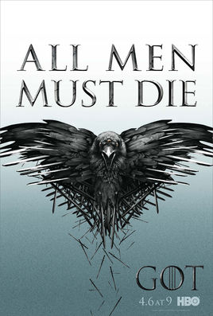
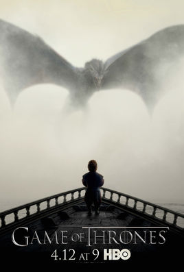
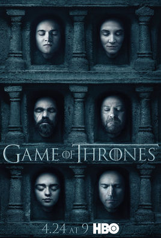
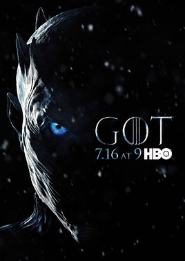

King
The three Kings ascended the stage, and their relations were complex and competitive , and the winner could rule the world.But faced with a common threat, Humans may be about to die, where they will go.
-
Jon snow
The family of the stark family had no idea that they were actually one of the only descendants of the targaryen family. Very simple, kindhearted, experienced so many he still do not know anything, has his own unique way of thinking. He did not believe that anyone should be prejudiced, and that all the great families of the north were subject to him, and were called the king of the north.
-
Daenerys targaryen.
The exiled princess, after many trials, became the mother of the mighty dragon, queen daenerys targaryen, The only remaining pure targaryen lineage.The only three remaining dragons in the seven kingdoms were in her hands, and the great family came to her, With a strong army and talented people, she made a beeline for the seven kingdoms with her huge army and headed for cersei, heading for the iron throne.
-
Cersei lannister.
The lannister family's only daughter, ruthless and ruthless, knew the rules of the game: There is no middle ground.All three children are the result of their own and brother incest, in order to destroy their own enemies what is bad? It's all done.It is safe to sit on the iron throne between the seven kingdoms and the great families. Now she has been betrayed and ruthless, walking towards a completely mad queen.
Family
The fictional mediaeval continent and the nine great families struggle for power.
Winter Is Coming
Hear Me Roar
Ours is the Fury
as High as Honor
Unbent, Unbowed, Unbroken
Family, Duty, Honor
We Do Not Sow

Growing Strong
Blood and Fire
ABOUT
The development curve of the story.
-

- A Song of Ice and Fire 1
- 2011.4
- The story took place in an imaginary continent focuses on the Lord of the king of the north border stark family Ed stark king invited to enter parliament, become the right hand of the king, the prime minister after a series of love-hate, loss events
-

- A Song of Ice and Fire 2
- 2012.4
- Plot around Ed after the death of stark, its belong to minister him-and robb stark for the king of the north border, the firstborn of northern army led by robb stark and strength lannister mutual confrontation, the south boundary of renly soldier keeps in king's landing zone, and unclear stannis, peoples as well as the iron islands of northwest above the black sea
-

- A Song of Ice and Fire 3
- 2013.3
- Plot, according to George Martin's novel song of ice and fire series of third freezing rain storms About burning black river has been cooling, to celebrate their victory over the city, and start the reconstruction, but the iron throne debate rumbles on
-

- A Song of Ice and Fire 4
- 2014.4
- King joffrey ushered in his wedding, but did not know that the crisis would approach him.At the same time, the dragon mother continued to lead the free slaves and Jon led his watchman brothers on the Great Wall to defend against the savage attacks.
-

- A Song of Ice and Fire 5
- 2015.4
- The rule of cersei lannister daenerys targaryen was met with great difficulty;Meanwhile, the stark children plot revenge;On the Great Wall, the night watchman, Jon snow, wanted to build an alliance with the wildlings, and to resist the demons, but he was betrayed by his night watchmen.
-

- A Song of Ice and Fire 6
- 2016.4
- Sixth season, tells the story of sansa stark, escaped from the city by burton family control over the winter, started a fisherman's in winds of winter trip to dany Liz was walking on a path of evil, flowing in the killing of the blood is her power of war and genocide, hammering a sword of war, close combat cardiac life fight fierce confrontation, to meet the passion of blood and fire baptism
-

- A Song of Ice and Fire 7
- 2017.7
- The season about the dragonmother about this dany, Liz temple, gayle Ann return to westeros and prepare to unified seven kingdoms, was northern Wang Qiongen · snow warning from the north of the dead army a deadly threat Winds in winter has come, and cold blend, world war came, and a ll the family will be faced with the final decisive battle of life and death
- One dragon is dead and two are still alive.
Cast of Characters
Introduction to the main good characters in the story.
Jon Snow
actor kit harington.
Daenerys targaryen
actress emilia Clarke.

Tyrion lannister
Tyrion lannister